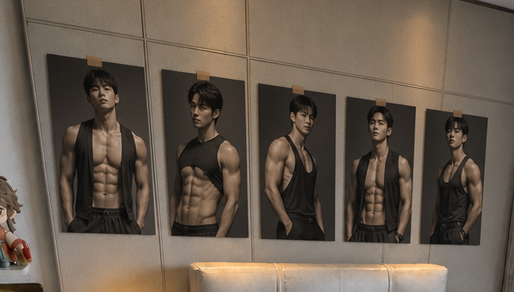
床头：一整排海报
5张同尺寸、同色调的男生健身写真，一字排开。用米色纸胶带固定，不加画框，不做零散拼贴。
保留深蓝床品、两块原地毯、窗帘、白色折叠桌、开放架和全部家具，只用灯光、织物、摆件与主人的兴趣元素增加温度。
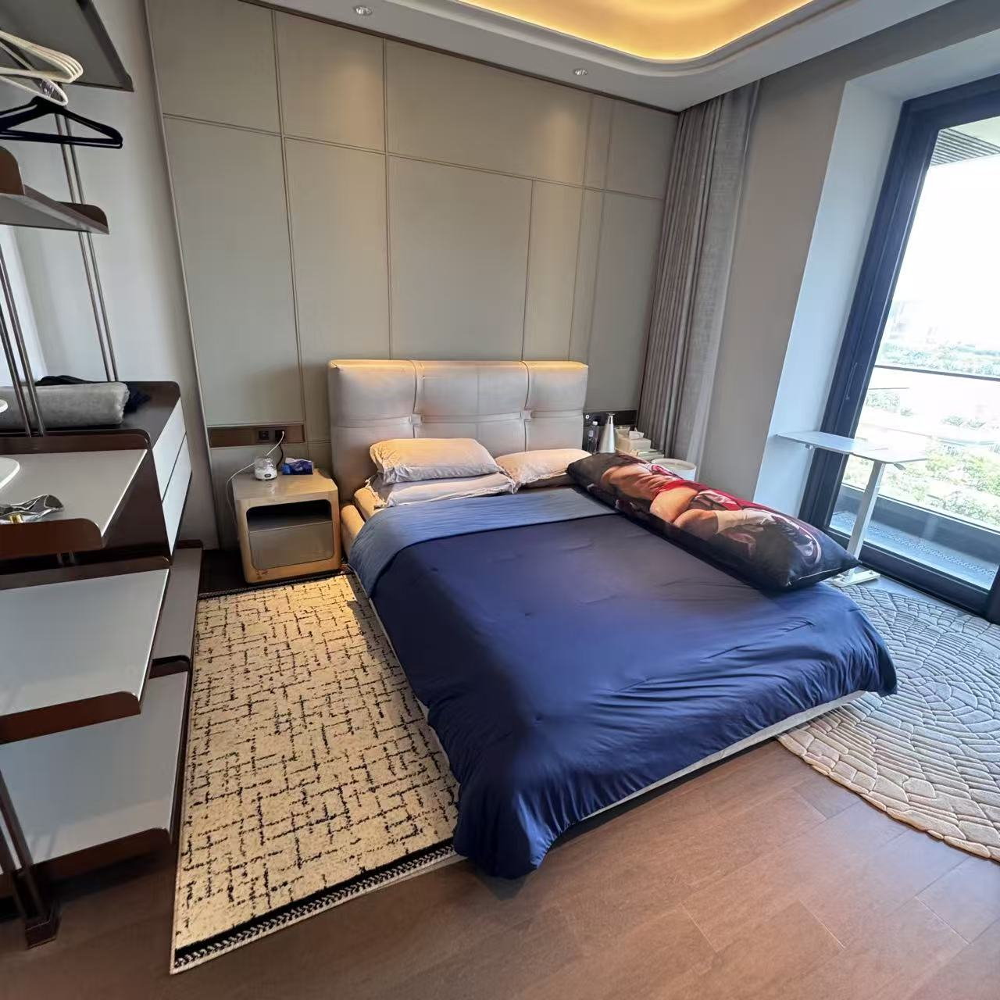
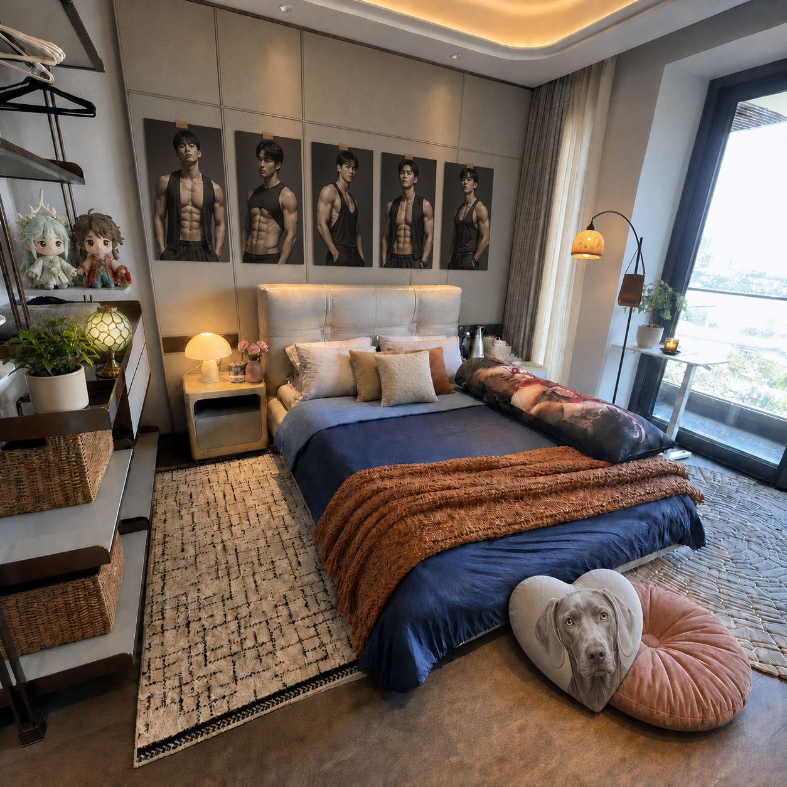
控制新增物件数量，每个区域只承担一种氛围功能，避免再次显得拥挤。

5张同尺寸、同色调的男生健身写真，一字排开。用米色纸胶带固定，不加画框，不做零散拼贴。
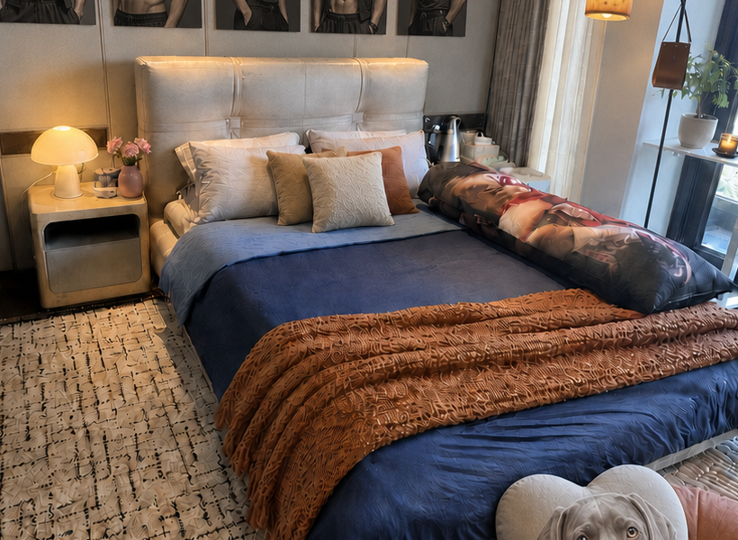
保留深蓝床品和人物长枕，加焦糖针织毯、奶油与赤陶色小抱枕，形成深蓝＋暖棕的过渡。
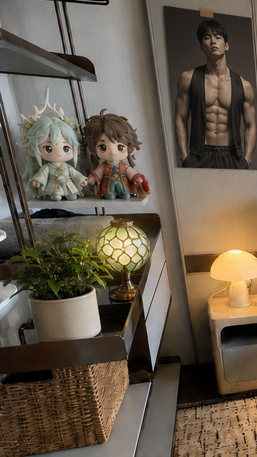
架子结构完全保留。娃娃、绿植和彩色玻璃花灯集中在相邻两层，藤编篮收纳零碎物品。
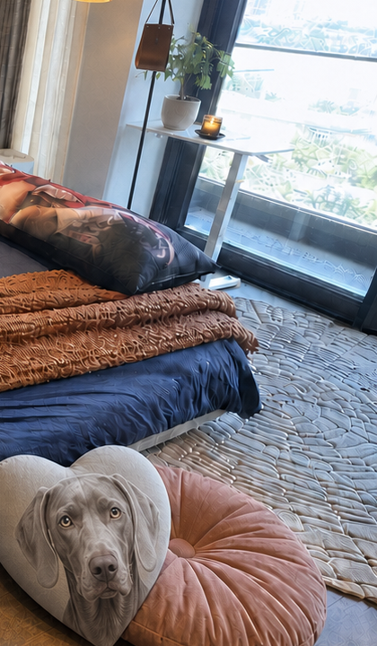
主方案使用可随时挪动的灰粉坐垫，魏玛猎犬爱心抱枕落地靠放；弧形琥珀灯提供低位暖光。
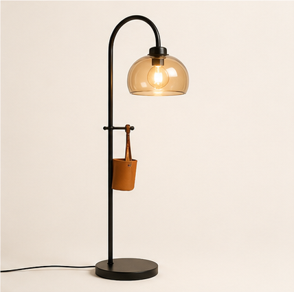
弧形灯靠墙摆放，灯罩不越过阳台门开启范围。白桌保留，只放绿植与无明火小夜灯。
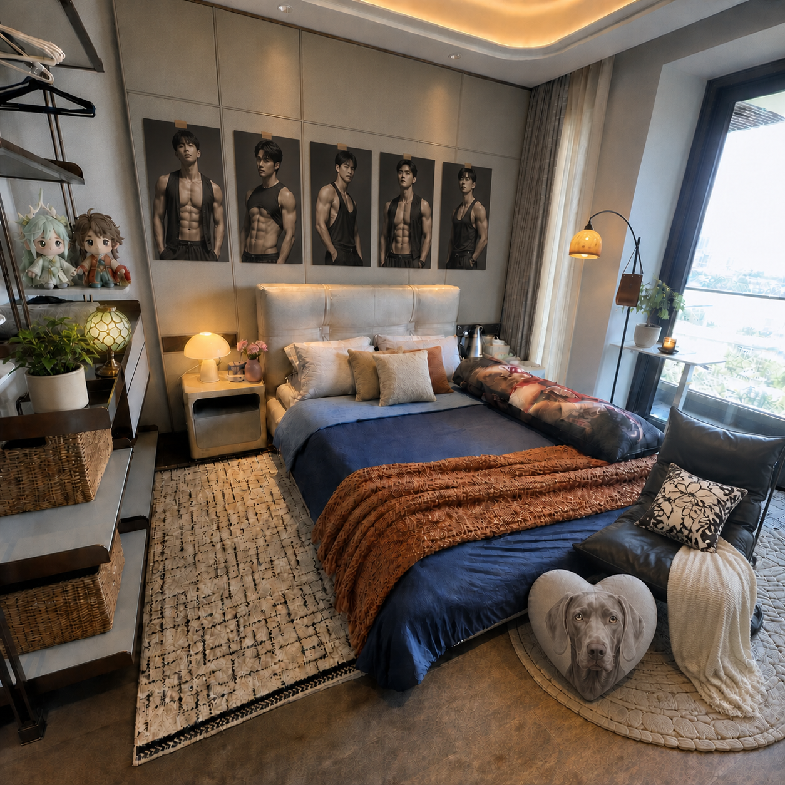
如果更看重阅读和坐卧舒适度，可把主方案中的粉色圆坐垫换成这一把小体量黑色无扶手躺椅。奶油针织毯只搭一条，魏玛猎犬爱心抱枕靠椅脚放。选购时优先确认宽度不超过约70厘米、椅背不过高、阳台门仍能完全开启。
每一项都有对应图片。尺寸为下单前的建议范围，最终以现场复尺为准。
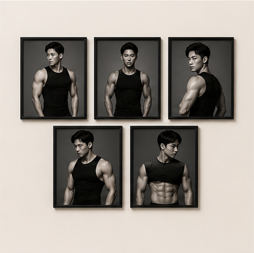
A3左右，黑白或暖灰色调；统一裁切、统一纸张。
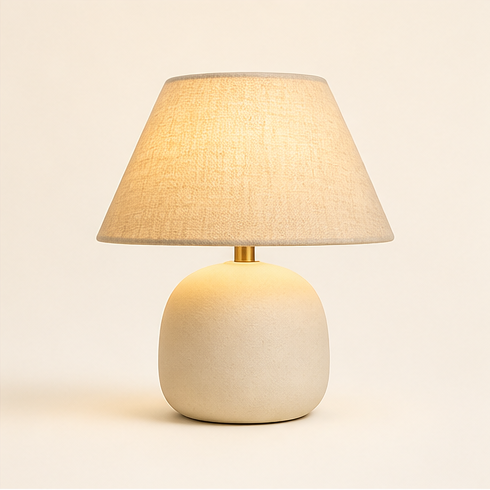
2700K暖光，直径约20—26厘米，避免冷白光。
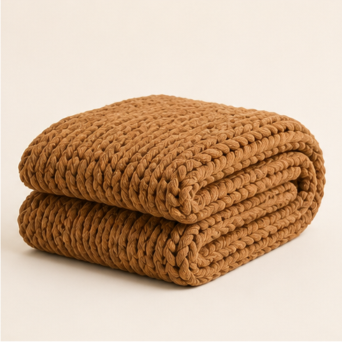
约130×170厘米，横搭床尾，不遮住全部深蓝床品。
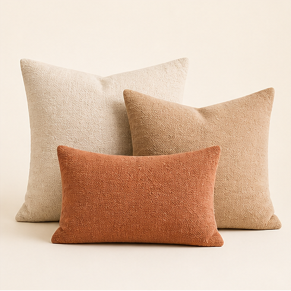
奶油、燕麦、赤陶各一只，尺寸40—50厘米。
细黑杆、小底座、暖琥珀灯罩；不挡阳台门。
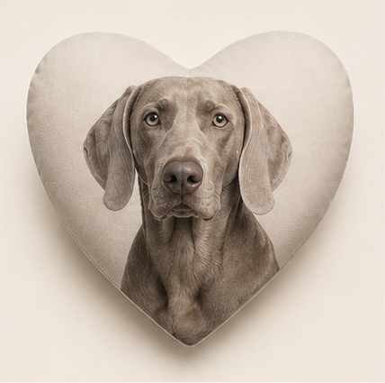
用主人真实狗狗照片定制，约40—45厘米，落地靠放。
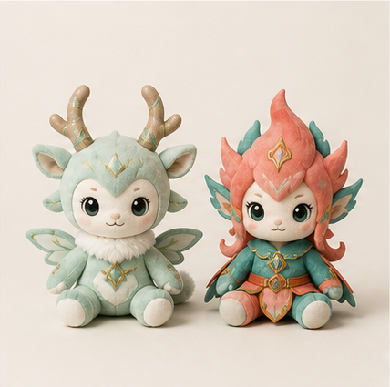
控制在20厘米左右，同层集中陈列，不分散到床面。
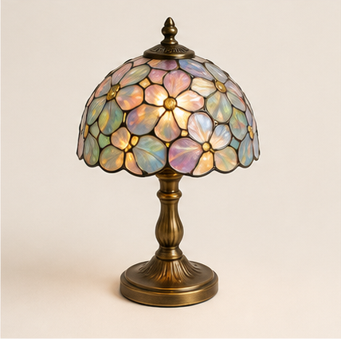
选择小型台灯或充电款，和娃娃、绿植组成一组。
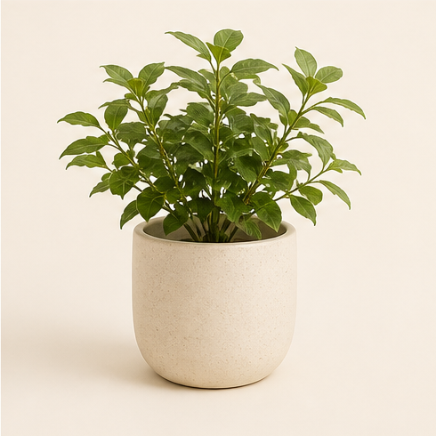
一盆放架子，一盆放窗边白桌；选耐阴、叶形简洁的品种。
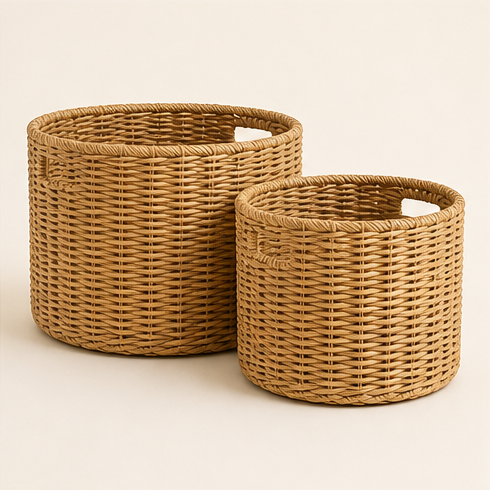
按架子净宽复尺，统一颜色，用来隐藏零碎物品。
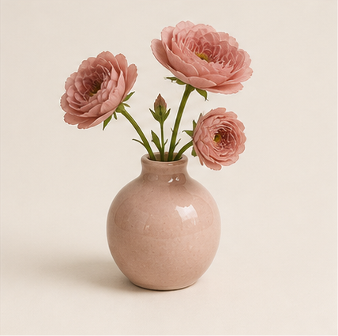
只放3—5枝小花，粉色面积控制在约10%—15%。
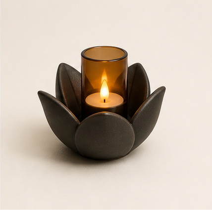
选充电LED蜡烛，不用真火；与窗边绿植并排。
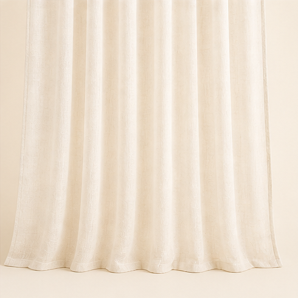
仅在现有轨道允许时加一层，原灰色遮光帘继续保留。
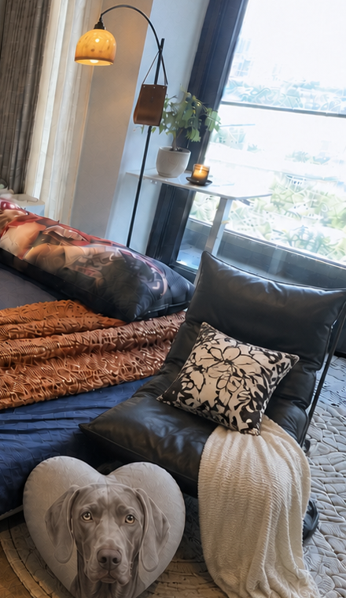
宽度建议不超过约70厘米；与粉色圆坐垫二选一。
先做最能改变氛围的项目，摆完一轮再决定是否需要休闲椅。
床头灯、焦糖毯、3只暖色抱枕先到位，成本低、效果最明显。
测量床头墙可用宽度后统一打印海报，再加入狗狗抱枕和娃娃。
先用粉色坐垫试住一周；确实常在窗边阅读，再换成低矮休闲椅。